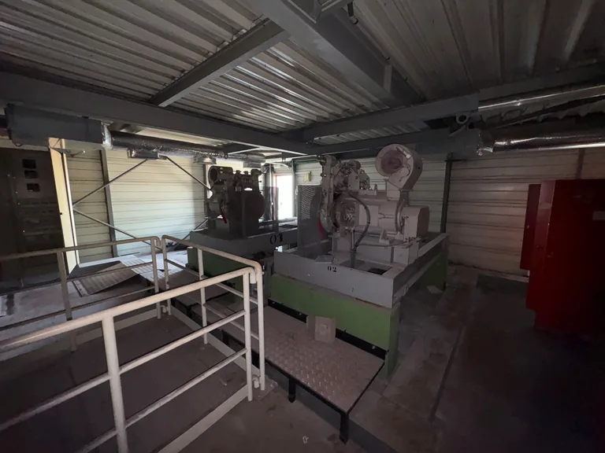
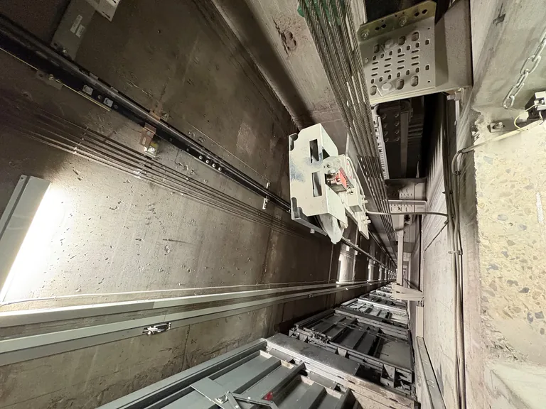
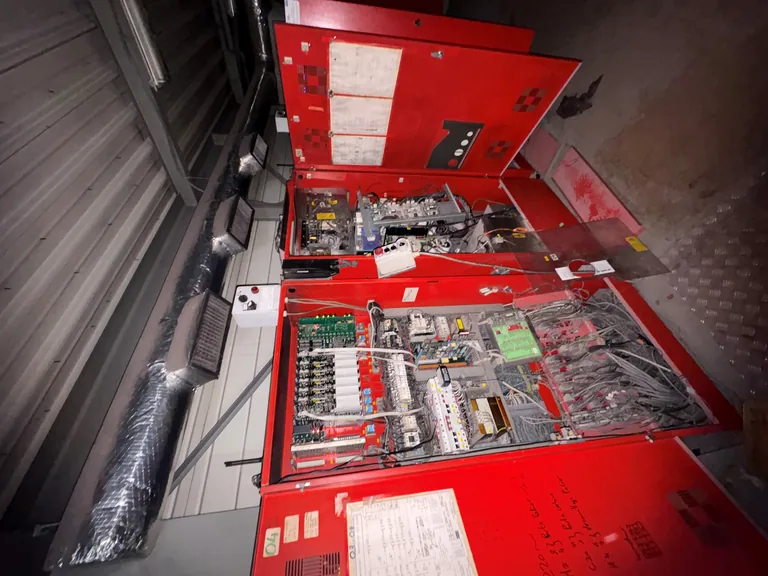
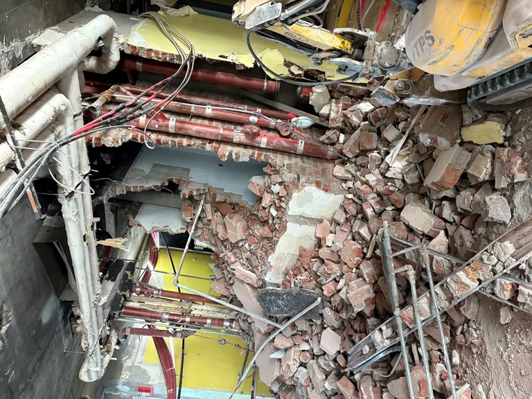
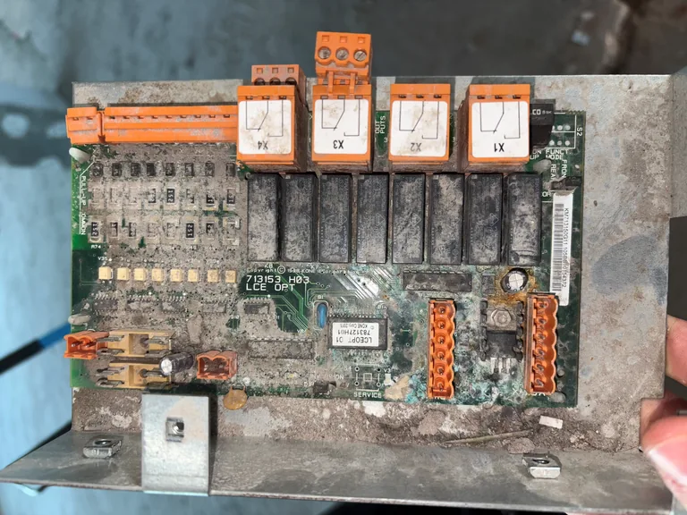

Expérience Stage à Paris
En maintenance chez ADS
Huit semaines de stage comme technicien de maintenance chez ADS, d’avril à juin 2025, sur des ascenseurs et des monte-charges.
- ADS · Paris
- Avril – juin 2025
- 8 semaines

Au cœur des installations
Aux côtés de l’équipe technique, j’ai participé à la maintenance préventive et corrective, aux interventions sur les composants mécaniques et électriques et aux tests des systèmes de sécurité. J’ai aussi utilisé les outils de diagnostic et contribué à la rédaction des rapports d’intervention.
Photos du stage







